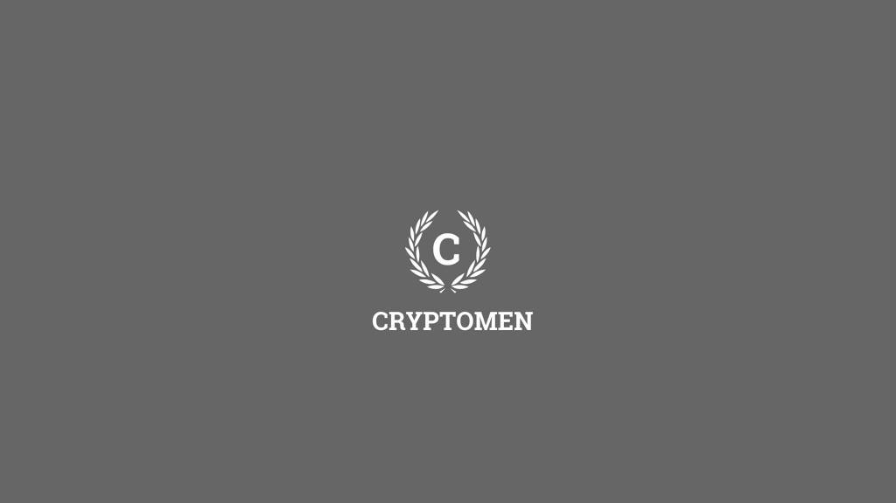
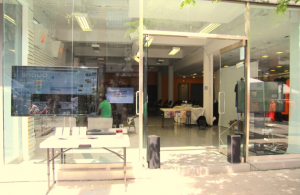
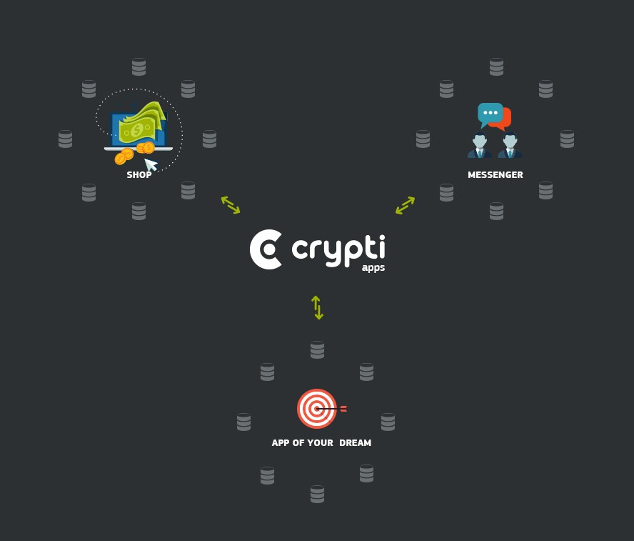

by Special Collaboration | Nov 1, 2014 | Headlines |
Warning: file_get_contents(https://blockchain.info/q/addressbalance/13VxRGh6tmn7pSZoi16XXTWtjA1zT1YrNe): failed to open stream: HTTP request failed! HTTP/1.1 429 Too Many Requests
in /var/www/html/wp-content/themes/divi-child/functions.php on line 405

Dear Cryptomen,
Many exciting things have been happening in our neck of the woods, and I would like to first say thank you to all of our loyal followers who have been with us from day one, and to all those who have just met us- welcome!
We started this project with nothing but our brains and ambition, and now six months later we are on the pinnacle of innovation, creating services the world has never seen. This is the possibility of Bitcoin made reality.
I’m sure you are all extremely excited about CryptoFund CF01 – ‘Miss Baker’, and I have some important announcements to make.
Launch Status:
As of 11:50pm UTC, October 31, 2014, CF01 has raised a total of 90.88281161 BTC with a total of 66 transactions. This is well over our goal of 50 BTC! Furthermore, due in part by popular demand, but also for important security measures, I am excited to announce that we are extending the CF01 funding period to Monday, November 3, 2014! The following reasons are a breakout of this decision:
- Security is of paramount importance to us. Our Chief Technology Officer Marie-Lynn Richard has brought on a new Chief Security Officer to the team who is working on the server, reviewing and hardening every aspect of our platform.
- Our advisors have warned us of the possibility of third parties hedging against our trades and manipulating the market against our live portfolio. We are adamant about keeping our members shielded from such activity and are modifying our approach to provide as much transparency as possible, while mitigating the risk of manipulation. As a preliminary measure, we will be posting the live balance of the portfolio, pulled from our API’s coupled with a real-time visual display of our balance increase (decrease) over time. Secondly, we will be providing a trading record of our trading activity from our software in our weekly report. In this way, our members can follow the overall balance in real-time, and still see a record of our trades, without the risk of foul play.
- Due to the recent media attention in the final few days of the funding period, we have had many emails requesting an extension. We have been featured on Cointelegraph, check it out here!
While sticking to a schedule is important to us, providing the best possible service to our members takes precedent. As a new company in a rapidly changing industry, we are aware that conditions change and we stand ready to adapt and evolve to the challenges we face. At Cryptomen, it is important to us that we keep communication lines open and provide you with timely and accurate information.
With that being said, we are so very excited for all of you to join us in this journey. Together we are making history.
And as always, Stay #turnt4cryptoz!
P.S. Happy Halloween!
 By W. D. Pryor
By W. D. Pryor Tip the writers! 13VxRGh6tmn7pSZoi16XXTWtjA1zT1YrNe
13VxRGh6tmn7pSZoi16XXTWtjA1zT1YrNe
Received this month: BTC 0.0000
Add a Tooltip Text
by Special Collaboration | Oct 23, 2014 | Headlines, Press Release |
Montreal, October 23rd 2014
Bitcoin Embassy welcomes Cryptomen in its coworking space.
The Bitcoin Embassy’s street level co-working space. A friendly inviting space in the middle of Downtown Montreal to talk about Bitcoin! (Photo credit: F. Pouliot, Bitcoin Embassy)
The Bitcoin Embassy, the world’s first physical space dedicated to cryptocurrency and distributed technology, is pleased to announce that it will now physically host the altcoin analysis group Cryptomen in its collaborative working space. This partnership is in line with one of the Bitcoin Embassy’s most important goals: to bridge the knowledge gap between interested investors and participants in the cryptocurrency economy.
“We have observed a rapidly increasing interest in cryptocurrency investments from traditional financial institutions and private investors. Many of those who believe in Bitcoin’s potential are interested in diversifying their investments while nevertheless remaining outside of the fiat economy”, says Francis Pouliot, director of public affairs at the Bitcoin Embassy.
Alternative currencies offer an ideal solution for such investors, but their viability is difficult to assess and the industry has been rife with fraudulent investment schemes. We have offered our working space to Cryptomen because we believe they will contribute to bringing clarity, expertise and transparency to the altcoin investment ecosystem.
Cryptomen launches CryptoFund
CryptoFund is a cryptocurrency investment fund spearheaded by Cryptomen CEO Jean-François Hotte and CTO Marie-Lynn Richard. Cryptomen was first founded in order to provide accurate and trustworthy information to cryptocurrency traders. “As active traders and crypto-enthusiasts, we wanted to help more people get involved in trading”, says Jean-François Hotte, “we began offering ongoing premium portfolio management services but we felt like we were still missing something”.
With CryptoFund, Cryptomen have the unique ability to bring portfolio management to any willing investor in a completely transparent and exciting way. Each fund is launched individually after a 30 day open funding period during which investors simply create a profile with a unique deposit address, enter their payout address and send the funds they wish to invest. Once trading begins, users can log in and monitor the trading activity and their portfolio balance in real time. The service is free, with traders remunerated with 25% of trading profits.
The Bitcoin Embassy does not officially endorse any investment scheme, including CryptoFund, but we can attest to the honesty and expertise of CryptoFund’s management. We remind potential investors that cryptocurrency investments should be considered high risk.
The Bitcoin Embassy is the world’s first physical space dedicated to the adoption and development of cryptocurrency technology. It is a non-profit organization based in Montreal, Canada. For more information, please contact Francis Pouliot at francis@bitcoinembassy.ca.
by Special Collaboration | Aug 29, 2014 | Altcoins, Events |

The Crypti team gave Cryptomen a sneak peak at their roadmap for Crypti:
We are now into the first week of post-launch activity and have a fully functional and stable wallet. While some work still needs to be done on minor bug fixes and a few tweaks here and there, we wanted to give the community a sneak peek into what the next 12 months of development will look like.
Here is the first rendition of the Crypti Development RoadMap!
Short Term Development (1-3 Months)
• Working Block Explorer
• Native Windows Wallet (1-click installer)
• Custom Block Chains
• Re-brand, Web Design, & Marketing Materials
• Crypti Introduction Video
Intermediate Term Development (3-6 Months)
• Mobile Client
• Online Marketplace Management
• Merchant Review System
• In-Wallet Escrow System
• App Store (Featuring developer Crypti apps)
• Payment Processing System
Long Term Development Goals (6-12 Months)
• Affiliate & Referrals System
• Verified owners voting
• Profile based contact lists
• IPO Platform
• Mobile Forging
• USD / EUR Support in Block Chain
Keep in mind that this is by no means a final list and items will be added as we add them internally.
The Crypti Team,
Boris, SyRenity, A.M., Bitseed, & GreXX”
You can find more about Crypti from their blog: http://blog.crypti.me/
For the technical details, check out the whitepaper: https://github.com/crypti/whitepaper
Source Article:
Crypti, with all it’s original and innovative features, is definitely a big step towards the future of crypto currencies!
Stay #turnt4cryptoz!
By The Crypti Team
Tip the writers! 13VxRGh6tmn7pSZoi16XXTWtjA1zT1YrNe
13VxRGh6tmn7pSZoi16XXTWtjA1zT1YrNe
Received this month: BTC 0.0264
Add a Tooltip Text
by Special Collaboration | Aug 11, 2014 | Bitcoin 2.0 & Metacoins |
Bitcoin is meant to change every stratosphere we know of. The financial sector is just the beginning.
What if we came up with an idea to change the scope of political/government power by way of a complete individual autonomous system guided by a public ledger? As Jeffrey Tucker stated a few months ago, “the existence of the blockchain on a distributed network ultimately means the death of the Nation State.” Let’s see what this entails shall we?
Distributed consensus is analogous to biological genetic process. The Bitcoin network has bio-chemical-mechanical characteristics, much like organic molecules or a cellular sort of machinery whose job is to tear down and assemble molecules and replicate everywhere.
As long as they are nourished with machinery and fed with incoming transactions, the miners/agents assemble transactions into symmetrically replicated structures representing the state of affairs until the end of time like DNA produces proteins.
The new idea is, abstractly, a distributed state consensus process – the process calculates, evaluates and records an agreement replicated among the agents in society. Every person in the globe represents an individual node. Algorithms measure our variations.
Agents produce a broadly replicated record of the state of affairs, and they all agree on the facts resolved on the record. In the Bitcoin system the record is a ledger that contains facts and evaluations of those facts.
This is a self organizing system that is permitted to thrive because it reduces the energy in the system due to lower cost connections among people conducting transactions.
Literally everyone can be their own autonomous state and even be represented ‘voluntarily’ by an organization, or many organizations. Imagine the Bitcoin network operating, right now around the world: miners building data structures, traders gaming the markets, merchants and consumers, or just anyone exchanging value and ownership and in the background, developers building software, etc. Literally every facet of society can be covered. Property contracts, deals with your neighbors, trusts, wills, dispute resolution, restitution cases, basically: everything.
What is new is that money, or more broadly resource statefulness, is exchanged without middlemen. Instead the machinery to execute a market transaction is simply a program abiding by a protocol. The machinery is a new efficiency for transfer of stateful value and ownership. (Note that credit transactions are no longer inherently tied to the process.)
This market function has bifurcated or split off and become its own module in the social system. Banks work with both debit and credit, and they record statefulness in a debit/credit ledger. But the debit part doesn’t need the banks. And so the Bitcoin network pre-empts that market function, leaving the credit function to the banks, essentially re-modularizing the money system. And probably, eventually the credit function will also be pre-empted from the banking system, political system.
The system becomes a distributed consensus of individual human action one node at a time recorded on a never-ending public ledger. Every point of infrastructure can be covered. This surely sounds beautiful to me.
“Economic freedom is the greatest tool of liberation.” ~ Daniel Hawkins
There are those so-called “libertarians” that would love to ignite a violent revolution. Not remembering history in the least or the lessons of the past. That every violent revolution has led to what we have today: tyranny. They even scoff at the idea that Bitcoins can’t help to end the state. I laugh at you. Not only will Bitcoins end the nation-state but it will change the consensus of every paradigm in the globe. Why? Because it represents every individual, one node at a time. Human Action, baby! Read it. It’s a book by a guy named Mises.
By J Redman
Tip the writers! 13VxRGh6tmn7pSZoi16XXTWtjA1zT1YrNe
13VxRGh6tmn7pSZoi16XXTWtjA1zT1YrNe
n/a
Add a Tooltip Text
{kind=link}
{kind=link}
{kind=link}